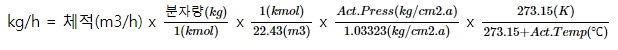

| 1 mole | 6.022 x 10^23 만큼의 입자(원자, 분자, 이온 등)를 포함하는 양(탄소 12g에 포함된 탄소 원자의 수) |
| MW | Molecular Weight, 1mole에 포함된 물질의 질량(g) |
| MV |
Molar Volume, 1mol에 포함된 물질의 체적 (22.414 L/mol) (Standard state : at 0℃, 1atm) |
| wt% | 질량 퍼센트(%) 농도를 의미함 |
| vol% | 체적 퍼센트(%) 농도를 의미함 |
| mol% | mol 퍼센트(%) 농도를 의미함 |
| 분자량 | 1mol에 포함된 물질의 질량(g) |
| 체적 | 1mol에 포함된 물질의 체적 (22.415m3/kmol) (Standard state : at 0℃, 1atm) | 수식 |
 |